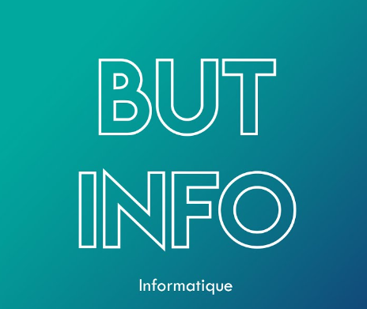
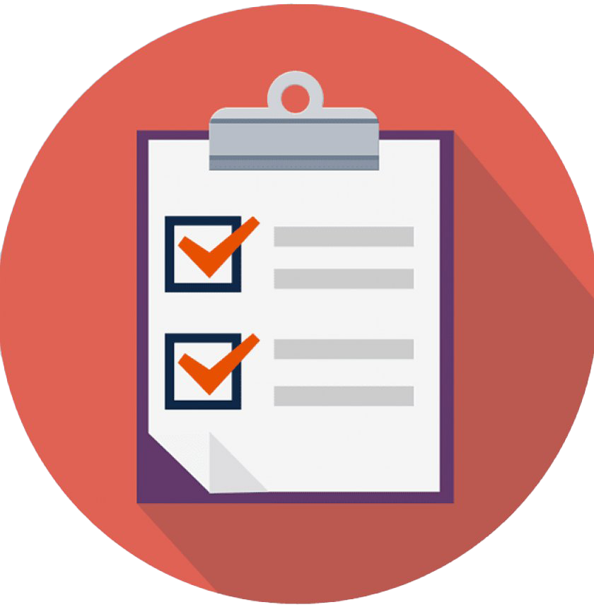

Bienvenue sur la page concernant le Glossaire
C'est ici que sont définis tous les termes relatifs au BUT
BUT (Bachelor Universitaire de Technologie) :
- Le BUT est un diplôme universitaire de premier cycle en France. Il est délivré par les Instituts Universitaires de Technologie (IUT).
- Il se divise en plusieurs spécialités, couvrant un large éventail de domaines tels que l'informatique, la gestion, l'électronique, etc.
- Le BUT vise à fournir une formation technique et professionnelle, combinant des cours théoriques avec des stages en entreprise.

IUT (Institut Universitaire de Technologie) :
- Les IUT sont des établissements d'enseignement supérieur rattachés aux universités en France.
- Ils offrent des formations de deux ans (DUT - Diplôme Universitaire de Technologie) et trois ans (BUT - Bachelor Universitaire de Technologie) dans divers domaines techniques.
- Les programmes des IUT sont conçus pour préparer les étudiants à entrer directement dans le monde du travail après l'obtention de leur diplôme, mais certains peuvent également choisir de poursuivre leurs études à l'université.
SAÉ (Situation d'Apprentissage et d'Évaluation) :
- Les SAÉ sont des méthodes pédagogiques utilisées dans l'enseignement supérieur. Elles sont conçues pour permettre aux étudiants d'acquérir des compétences pratiques en appliquant leurs connaissances théoriques à des situations concrètes.
- Les SAÉ impliquent souvent des projets, des études de cas ou des activités pratiques qui mettent en œuvre les concepts enseignés dans le cadre du programme.
- Ces situations peuvent également servir d'outils d'évaluation pour mesurer la compréhension des étudiants et leur capacité à appliquer leurs connaissances dans des contextes réels.


Les Compétences
- Une compétence est un « savoir-agir complexe, prenant appui sur la mobilisation et la combinaison efficaces d’une variété de ressources à l’intérieur d’une famille de situations » (Tardif, 2006). Les ressources désignent ici les savoirs, savoir-faire et savoir-être dont dispose un individu, et qui lui permettent de mettre en œuvre la compétence.
- Les situations professionnelles réfèrent aux contextes dans lesquels les compétences sont mises en jeu. Ces situations varient selon la compétence ciblée. Les niveaux de chaque compétence forment peuvent, selon le type de B.U.T. proposé, être constitutifs de un, plusieurs ou tous les parcours.